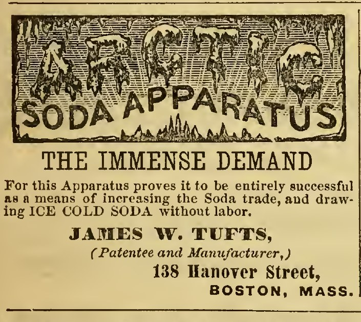

Biography
James Walker Tufts was born in Charlestown, in the part that became Somerville, on February 11, 1835, a son of Leonard Tufts, a blacksmith, and Hepzibah (Fosdick) Tufts. He was named for the Rev. James Walker, who had married his parents (Tufts Kinsmen, Vol. I, p. 237, no. 130-6; Tufts Kinsmen, Vol. II, p. 157, no. 300-4). The family record describes him as an apothecary, a soda-fountain manufacturer and silversmith, and the founder of Pinehurst, North Carolina (Tufts Kinsmen, Vol. II, p. 157).
Apothecary and the “Arctic” Soda Apparatus
The state business directories trace a James W. Tufts from the drug counter to the soda-fountain trade. In 1867 he is listed among the apothecaries of Medford (The Massachusetts Register for 1867, p. 115. Internet Archive), and in Boston under “Soda and Beer Apparatus”: “Tufts James W. 138 Hanover (see adv. page 769)” (The Massachusetts Register for 1867, p. 526. Internet Archive). The advertisement, indexed as “Arctic soda-apparatus” (The Massachusetts Register for 1867, p. 589. Internet Archive), promised soda drawn ice-cold “without labor”:

“Arctic Soda Apparatus. The immense demand for this Apparatus proves it to be entirely successful as a means of increasing the Soda trade, and drawing ICE COLD SODA without labor. James W. Tufts, (Patentee and Manufacturer,) 138 Hanover Street, Boston, Mass.”
The Massachusetts Register for 1867, p. 769. Internet Archive
By 1874 the business had moved to Bowker Street: “Tufts James W. 33 Bowker,” under “Soda, Ale, and Beer Apparatus” (The Massachusetts Register and Business Directory (1874), p. 221. Internet Archive), while the Medford apothecary shop appears as “Tufts James W. & Co.” (The Massachusetts Register and Business Directory (1874), p. 245. Internet Archive). In 1878 he is at “33 to 39 Bowker” (The Massachusetts Register and Business Directory (1878), p. 258. Internet Archive), and he lent his name to an advertisement for the Boston Journal of Commerce: “I have found the ‘Boston Journal of Commerce’ an excellent medium for the advertisement of my goods,” signed “James W. Tufts. Soda Water Apparatus Manufacturer, Boston, Mass.” (The Massachusetts Register and Business Directory (1878), p. 837. Internet Archive).

The family record adds that he founded a plated silverware business in Boston in 1875, which made fountain ware and table pieces until 1915, and that he built a Colonial Revival house at 72 Powder House Road, Medford, in the 1890s (Tufts Kinsmen, Vol. II, p. 157).
In 1916 the Boston directory lists “Leonard vice pres 282 Congress” among the Tufts entries (The Boston Directory for 1916, vol. 2, p. 1955. Internet Archive). The same directory gives 282–288 Congress Street as the address of the American Soda Fountain Company (The Boston Directory for 1916, vol. 1, p. 188. Internet Archive). See Leonard Tufts (1870–1945).
His earlier career, as an apothecary in Somerville and Medford, and the later merger of his firm into the American Soda Fountain Company, are described on Businesses: James W. Tufts, apothecary and soda-fountain maker.
Service Record
Town: Charlestown (now Somerville); Medford; Boston, Mass.; Pinehurst, N.C. · Dates: 11 February 1835 – 2 February 1902
No military service is recorded for him.
Family Connection
Father: Leonard Tufts (1788–1851), blacksmith, of Charlestown and Somerville. Mother: Hepzibah (Fosdick) Tufts (1795–1864) (Tufts Kinsmen, Vol. I, p. 237, no. 130-6). Children: Mary Gertrude; George Leonard (Leonard) Tufts (1870–1945); James Walker (1872–1875); and Bessie (1875) (Tufts Kinsmen, Vol. II, p. 157, 400–401).
Relatives with profiles on this site: son Leonard Tufts (1870–1945).
Spouse(s)
- Mary Emma Clough (b. June 1, 1845, at Alton, Ill.; d. December 5, 1922, at Medford), daughter of Samuel Francis and Martha Louisa (Ayer) Clough; married October 30, 1862, at Medford (Tufts Kinsmen, Vol. II, p. 157).
Authoritative IDs / Index Numbers
| Source | ID / status |
|---|---|
| Perseus person index (auth=) | auth=tufts,james. This is a name-level key shared by every James Tufts in Perseus, not a personal ID. Use it with the passages cited on this page. |
| Find a Grave memorial | Note: Pending further work. |
| Brooks, History of Medford (1855) register no. | Note: Pending further work. |
| Mass. Soldiers and Sailors | Not yet checked for this page |
| DAR ancestor no. | Note: Pending further work. |
| FamilySearch ID | Note: Pending further work. |
| Geni profile | Note: Pending further work. |
| WikiTree ID | Note: Pending further work. |
| Town / vital records | Medford VRs not yet checked by volume and page |
Only IDs confirmed against dates and family are given as matches. “Not yet checked” means the source has not been searched; “Checked, not found” means it was searched without a match.
⚑ Unverified
Identity. The directories say only “James W. Tufts”; the match with James Walker Tufts of the family record rests on the name, the Medford apothecary listing and the soda-fountain trade. That he founded Pinehurst is stated in the family record and in the NCpedia account cited on the Businesses page, not in these directories. Note: Pending further work.
Links and Resources
Every source, record, map, survey, marker and artifact tied to this person, gathered in one place. Page numbers are given where a book is cited.
Maps, Surveys and Artifacts
- — Advertisement: James W. Tufts’s “Arctic” soda apparatus, 1867. Detail of p. 769 (Advertising Department), The Massachusetts Register for 1867: “Arctic Soda Apparatus … James W. Tufts, (Patentee and Ma

Markers, Plaques and Places
- Businesses: James W. Tufts, apothecary and soda-fountain maker — His earlier career, as an apothecary in Somerville and Medford, and the later merger of his firm into the American Soda Fountain Company, are described on
Digitized Books and Journals
- The state business directories trace a James W. Tufts from the drug counter to the soda-fountain trade. In 1867 he is listed among the apothecaries of Medford (The Massachusetts Register for 1867, p. 115. · Internet Archive
- …of Medford (The Massachusetts Register for 1867, p. 115. Internet Archive), and in Boston under “Soda and Beer Apparatus”: “Tufts James W. 138 Hanover (see adv. page 769)” (The Massachusetts Register for 1867, p. 526. · Internet Archive
- …Apparatus”: “Tufts James W. 138 Hanover (see adv. page 769)” (The Massachusetts Register for 1867, p. 526. Internet Archive). The advertisement, indexed as “Arctic soda-apparatus” (The Massachusetts Register for 1867, p. 589. · Internet Archive
- Source: Internet Archive (full page) — …769 (Advertising Department), The Massachusetts Register for 1867: “Arctic Soda Apparatus … James W. Tufts, (Patentee and Manufacturer,) 138 Hanover Street, Boston, Mass.”Image: The Massachusetts Register for 1867. Public domain.
- By 1874 the business had moved to Bowker Street: “Tufts James W. 33 Bowker,” under “Soda, Ale, and Beer Apparatus” (The Massachusetts Register and Business Directory (1874), p. 221. · Internet Archive
- …(The Massachusetts Register and Business Directory (1874), p. 221. Internet Archive), while the Medford apothecary shop appears as “Tufts James W. & Co.” (The Massachusetts Register and Business Directory (1874), p. 245. · Internet Archive
- …appears as “Tufts James W. & Co.” (The Massachusetts Register and Business Directory (1874), p. 245. Internet Archive). In 1878 he is at “33 to 39 Bowker” (The Massachusetts Register and Business Directory (1878), p. 258. · Internet Archive
- …the ‘Boston Journal of Commerce’ an excellent medium for the advertisement of my goods,” signed “James W. Tufts. Soda Water Apparatus Manufacturer, Boston, Mass.” (The Massachusetts Register and Business Directory (1878), p. 837. · Internet Archive
- In 1916 the Boston directory lists “Leonard vice pres 282 Congress” among the Tufts entries (The Boston Directory for 1916, vol. 2, p. 1955. · Internet Archive
- …entries (The Boston Directory for 1916, vol. 2, p. 1955. Internet Archive). The same directory gives 282–288 Congress Street as the address of the American Soda Fountain Company (The Boston Directory for 1916, vol. 1, p. 188. · Internet Archive